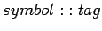
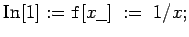
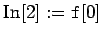
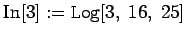
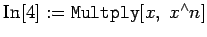
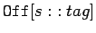
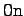
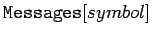

Inhalt Index DeskTop Bronstein

 Computeralgebrasysteme Mathematica Ergänzungen zur Syntax, Informationen, Meldungen
Computeralgebrasysteme Mathematica Ergänzungen zur Syntax, Informationen, Meldungen


Mathematica verfügt über einen Meldeformalismus, der für verschiedenen Zwecke eingesetzt werden kann. Die Meldungen werden während der Berechnungen erzeugt. Ihre Ausgabe erfolgt in einer einheitlichen Form: , so daß die Möglichkeit besteht, sich im weiteren auf diese Meldung zu beziehen. Zur Illustration werden folgende Fälle betrachtet:
| Beispiel A |
|
  |
| Beispiel B |
|
 |
| Beispiel C |
|
 |
Im Beispiel A warnt Mathematica daß im Verlaufe der Abarbeitung ein Ausdruck mit dem Wert  aufgetaucht ist. Die Berechnung selbst kann durchgeführt werden. Im Beispiel B ist der Aufruf des Logarithmus mit drei Argumenten erfolgt, was entsprechend der Definition nicht zulässig ist. Mathematica reagiert nicht. Im Beispiel C stößt Mathematica auf einen Symbolnamen, der neu ist, jedoch einem bekannten ähnelt. Mathematica weist darauf hin und reagiert nicht.
aufgetaucht ist. Die Berechnung selbst kann durchgeführt werden. Im Beispiel B ist der Aufruf des Logarithmus mit drei Argumenten erfolgt, was entsprechend der Definition nicht zulässig ist. Mathematica reagiert nicht. Im Beispiel C stößt Mathematica auf einen Symbolnamen, der neu ist, jedoch einem bekannten ähnelt. Mathematica weist darauf hin und reagiert nicht.
Der Nutzer kann mit  eine Meldung abschalten. In diesem Falle wird sie nicht ausgegeben. Mit  läßt sich die Meldung wieder zuschalten.
Mit  können alle Meldungen angezeigt werden, die sich auf das Symbol mit dem Namen symbol beziehen.